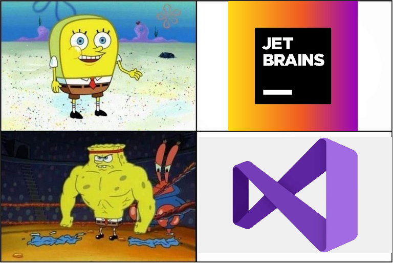
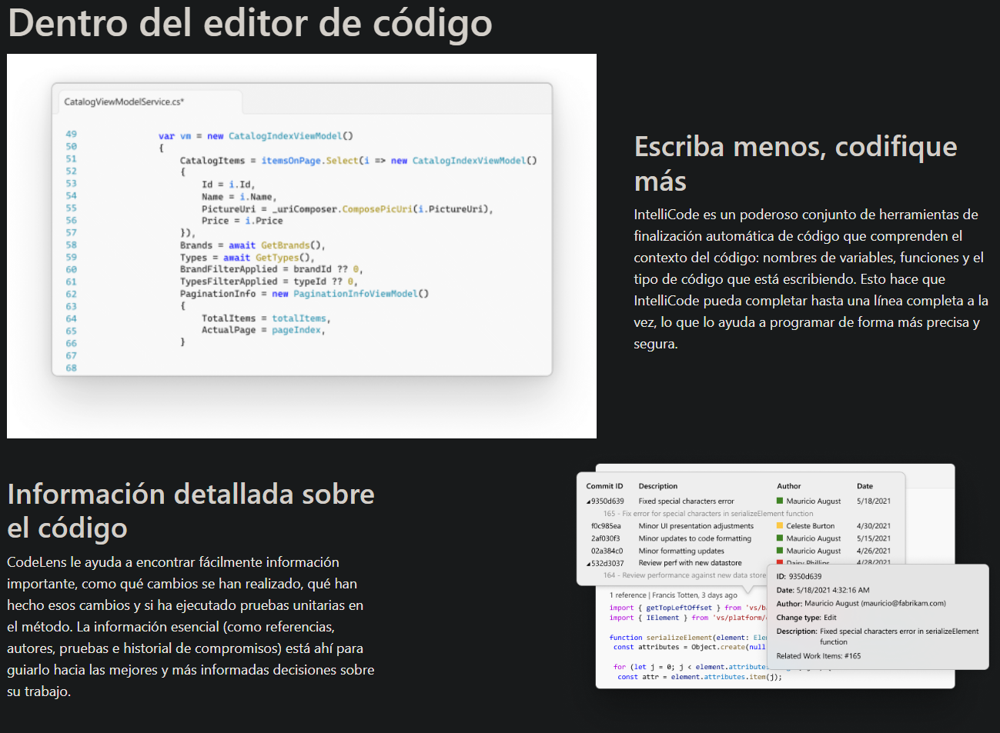
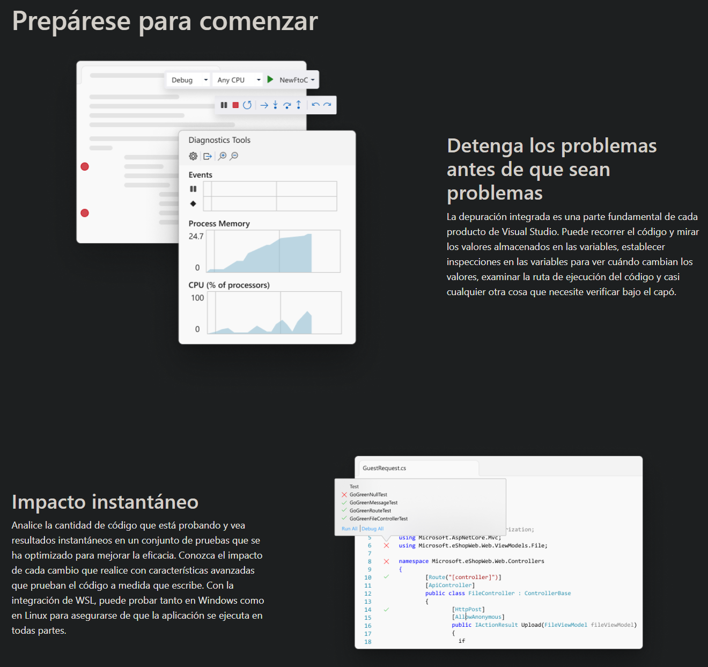
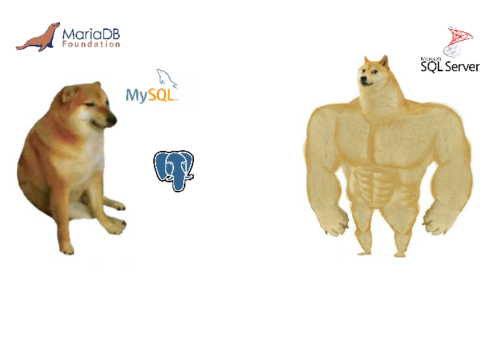
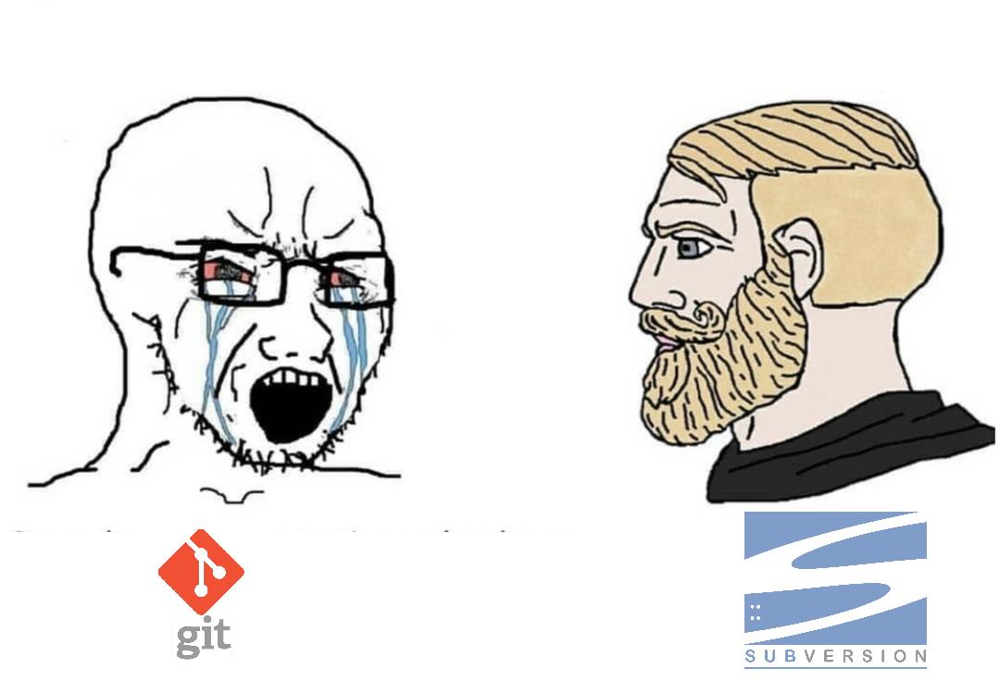

## Herramientas que utilizo <img src="https://us-tutu.s3-us-west-1.amazonaws.com/company-website/20210324/developer/developer-banner-pic%402x.png" width="200vw" height="auto" /> ###### dia a dia
## Desarrollo & Debugging 
## Visual Studio 2022 <img src="https://docs.microsoft.com/es-es/visualstudio/extensibility/migration/media/update-visual-studio-extension/shared-project-with-two-heads.png?view=vs-2022" width="800px" height="auto" />
## IDE 
### DEBUGGER 
## BASE DE DATOS 
## MICROSOFT SQL SERVER Microsoft SQL Server es un sistema de gestión de <u>base de datos relacional</u>, desarrollado por la empresa Microsoft. El lenguaje de desarrollo utilizado es <u>Transact-SQL</u>, una implementación del estándar ANSI del lenguaje SQL, utilizado para manipular y recuperar datos, crear tablas y definir relaciones entre ellas.
## MICROSOFT SQL SERVER #### MANAGEMENT STUDIO <img src="https://docs.microsoft.com/th-th/sql/ssms/f1-help/media/database-engine-query-editor-sql-server-management-studio/new-query.png?view=sql-server-2017" width="auto" height="500px" />
## MICROSOFT SQL SERVER #### EXPRESS INSTALLER <img src="https://tipstecnologicos.es/wp-content/uploads/2022/02/select-basic-installation-type.png" width="auto" height="500px" />
## CONTROL DE VERSIONES  <span style="font-size: 11px;">SPOILER: son iguales</span>
## SUBVERSION Apache Subversion es una <u>herramienta de control de versiones open source</u> basada en un repositorio cuyo funcionamiento se asemeja enormemente al de un sistema de ficheros. Es software libre bajo una licencia de tipo Apache/BSD. Utiliza el concepto de <u>revisión</u> para guardar los cambios producidos en el repositorio.
## TORTOISE SVN TortoiseSVN es un cliente Subversion, implementado como una extensión al shell de Windows. <img src="https://reactos.org/wiki/images/b/b4/TortoiseSVN_SVN-Merge_MergeMenu.png" width="auto" height="400px" />